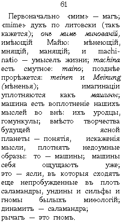
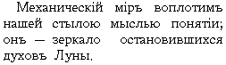

Glossolalia (Section 61)
GLOSSOLALIA

Initially "mime" was -- a magus; "mime" spirit in Lithuanian (so it seems); he is the mime of meandering, mine Maia: mangling, methinking, manipulating; and machinatio are -- the thoughts behind of life; machina is murky: maino; later it will cut through: meinen and Meinung (mental opinions); imaginations condense as machines; a machine is the incarnation of our thoughts on the outside: their degenerates, are homunculi; instead of the creation of the future clear planet -- concepts, perversions of thought, senseless images condense: these are -- machines; machines can already sense themselves; these are -- the cribs into which come still unawakened to the flesh salamanders, undines and sylphs and gnomes of past mythologies; the dynamite is -- a salamander; the switch -- this is the gnome.

The mechanical world is incarnated by our congealed thought of concepts; it is -- a mirror of the spirits of the Moon who have stayed there.